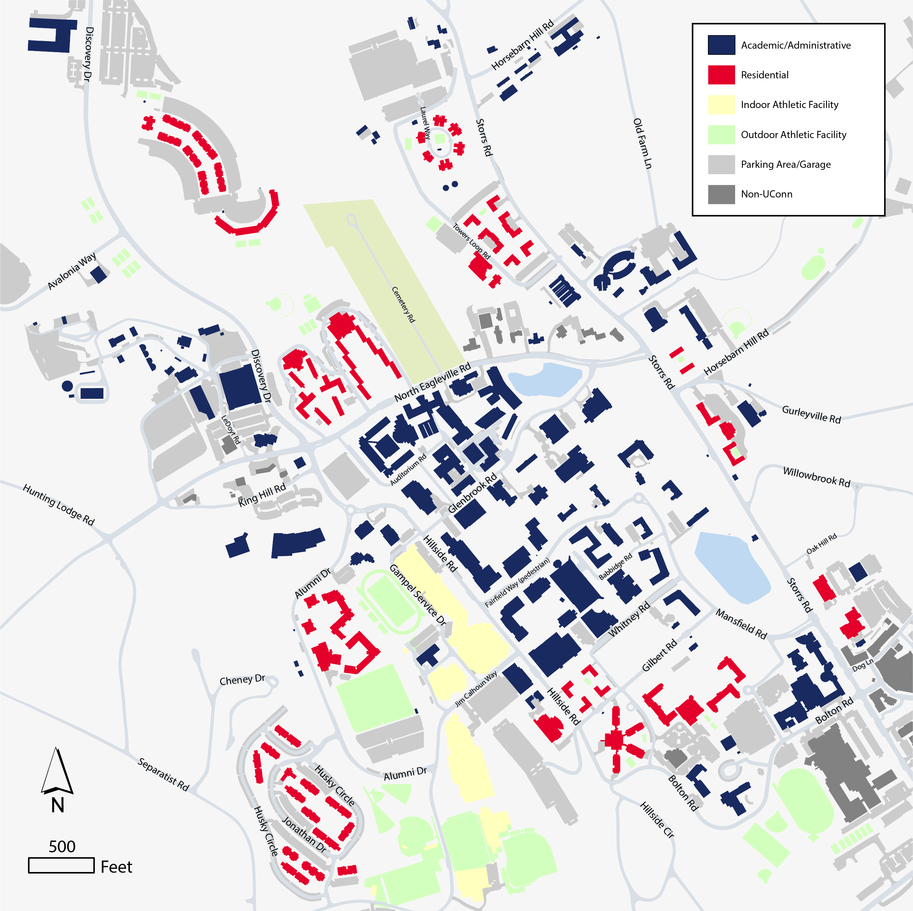

Major Projects
-
Zürich Transit Analysis
Skills used:
Data Analysis, Geospatial Analysis, Database Queries, Joins & Relates, Spatial Statistics, Buffer & Dissolve Operations (among other Geoprocessing tools)
Tools used:
Python (Pandas & ArcPy libraries), ArcGIS Pro, Adobe Illustrator, ArcGIS Online, ArcGIS Apps

-
UConn Campus Construction Developments
Skills used:
Geovisualization, Data Integration, Geospatial Analysis, Buffer & Dissolve Operations
Tools used:
ArcGIS Pro, StoryMaps, SQL, Adobe Illustrator & Photoshop

-
The Impact of Storm Surge on West Haven, CT
Skills used:
Proximity Analysis, Storm Surge Modeling, Spatial Interpolation, Geocoding
Tools used:
ArcGIS Pro, Adobe Illustrator, SQL, Google Slides

-
Dashboards
Maps
More Maps & GIS Work